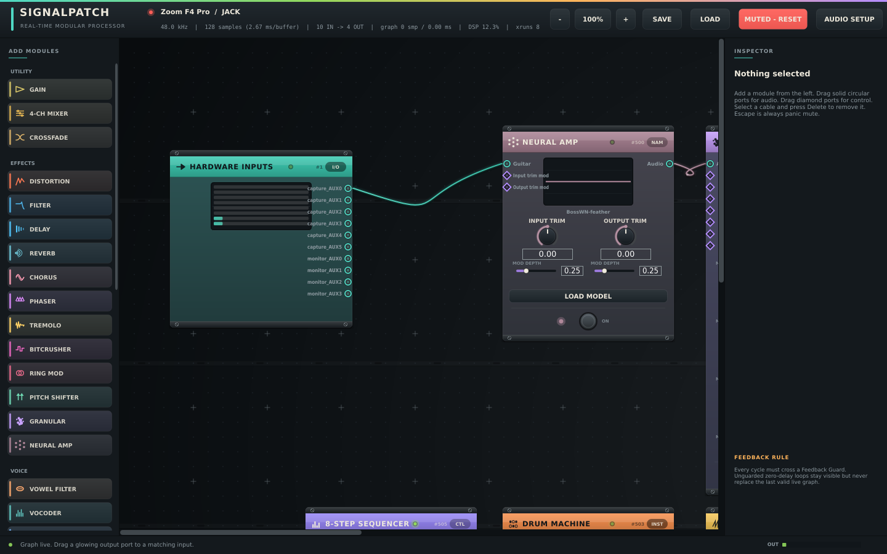

A real-time modular rack for guitar, voice and synthesis. Patch it like hardware. Play it like an instrument.

Drag cables between modules while the audio keeps running. Every cable glows with its live signal and carries flow pulses toward its destination. Every effect has a true-bypass stomp switch. Feedback loops are legal — through a guard stage that keeps them finite. Patches save as JSON and your last session comes back on launch.
Load real .nam amp profiles. Models parse on a worker thread and swap into the audio path atomically — no dropout, no freeze.
12-band vocoder, vowel/formant filter and an autotune that snaps pitch to a key — from transparent correction to full robot.
A grain cloud over a live 4-second buffer, pitch shifter, ring mod, bitcrusher, and a Script module that runs your own per-sample math.
Sequenced mono synth, Karplus-Strong pluck, drum machine with a clickable grid, live-input sampler and a 60-second 4-track tape with varispeed.
The callback allocates nothing — enforced by an allocation-trap test around a worst-case graph, a 30-minute soak and ASan/UBSan runs.
Every knob has a mod socket. LFOs, envelopes, sequencers, FFT band energies and macros patch into any parameter of any module.
A handheld — an ASUS ROG Ally class device — as a self-contained guitar patching studio, voice processor and synthesizer.
Plug in, pick it up, play. Stomp switches on the triggers, macro knobs on the sticks, patching on the touchscreen, a fullscreen performance surface readable at arm's length. Every roadmap phase walks toward that: playability first, then stereo and recording, then qualified neural amps, then the handheld itself.
MIDI in, MIDI learn, undo/redo, presets — play it like an instrument
Stereo, master recorder, sampler & 4-track persistence
NAM performance qualification, cab/IR node, model browser
Engine maturity, Windows, packaging, licence-clean releases
Handheld instrument mode: controller-first, boot-to-patch
# Linux
git clone https://github.com/willbearfruits/signalpatch
cd signalpatch
cmake -S . -B build -G Ninja -DCMAKE_BUILD_TYPE=RelWithDebInfo
cmake --build build --parallel && ctest --test-dir build
pw-jack ./build/signalpatch_artefacts/RelWithDebInfo/SignalPatch
# Flatpak
flatpak run org.flatpak.Builder --user --install --force-clean \
build-flatpak packaging/flatpak/io.github.willbearfruits.SignalPatch.ymlJUCE and NeuralAmpModelerCore are fetched automatically. Windows builds with Visual Studio 2022 — see the README. Amp profiles: ToneHunt.